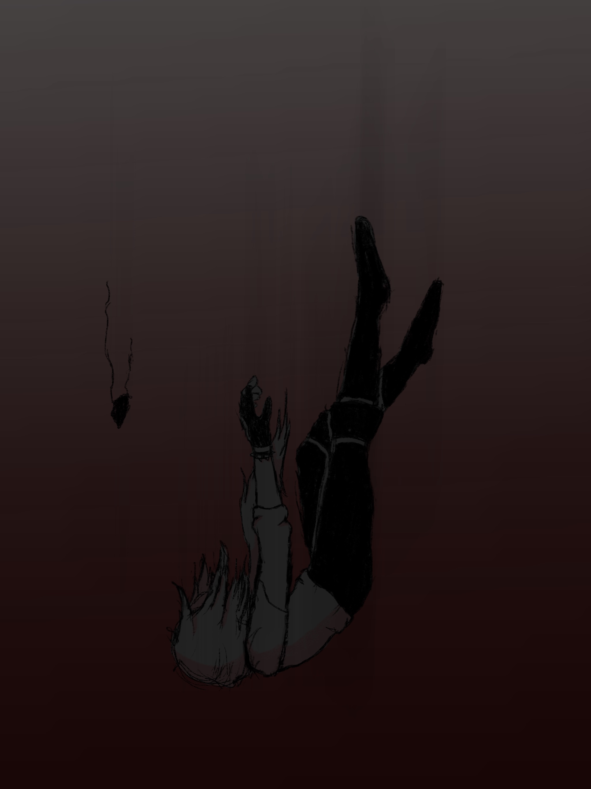
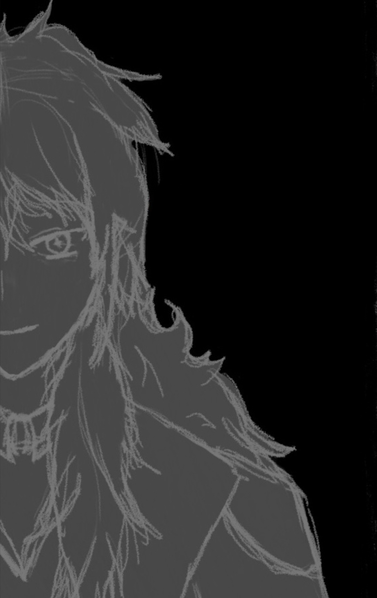

About the creator.
 Since I was younger, I've always enjoyed drawing and doodling. Whether it be drawing in my spare time or doodling during classes I had no interest in at high school, I'd usually find something to draw on with whatever time I had. I've found drawing to be somewhat of an escapism tool, I guess, as I can draw what I want. Doodling is a decent way to pass time as well, just doodling whatever random thing comes to my mind or whatever I need to practice (like drawing hands.)
If I'm drawing, I'll usually draw whatever I'm currently liking. The pictures here are of a character from a video game called Genshin Impact. A year or so ago, I would be drawing one of the characters from Undertale. Alongside that or prior to that, I would be drawing my own made up characters, called "original characters". Recently, I've started to draw on an iPad with the app called Procreate, but before that I was drawing on my computer with a wacom drawing tablet with a piece of software called Krita. I still do traditional art (pen and paper art) from time to time, like in scenarios where I don't have access to a device to draw on (like at high school).
Along with creating art as a form of "escapsim", I also like to write creatively. Whatever random scenario appears in my head, I'll want to write it. I've also in the past been able to write decent scripts and storylines in general, but that was mostly for high school rather than something I did in my freetime (though I did end up enjoying the finished product). I'll usually have multiple projects going at a time (as of writing this, I have three writing pieces and countless art pieces in progress).
When I'm not doing that, I'll be playing one of many games, sometimes with Emily (who wanted a mention in this website). Such games include but are not limited to Genshin Impact, Minecraft, The Sims 4 and Roblox.
While doing any of things (maybe with the exception of writing), I'll likely be listening to music. My music taste varies anywhere from the Undertale Soundtrack (or the musical version by Man On The Internet), to Runs In The Family by Amanda Palmer to Alien Blues by Vundabar to the soundtack of The Greatest Showman. Basically, if I like the lyrics of the song, then I'll listen to it (or I'll like the sound of it, like with GUY.exe by Superfruit or Stalker's Tango by Autoheart. I have low standards.). However, since about 2017, Imagine Dragons has held the spot of my favourite band. AGR is a close second, but those are the only two bands I listen to consistently.
So, what's next?
After this, I think I'll plan on continuing to study at here. I left high school in my NCEA Level 2 year as I had got everything I needed (NCEA Level 1, 2 and 3) to come here as suggested by the careers advisor at my high school. (and due to me hating high school with a burning passion and wanting to be anywhere but there). I'll probably keep going with I.T because I feel like that is where I should be, but I do have a back-up plan if that goes bad (mechanics).
Since the borders have reopened (thanks, Covid), we might plan to go on a (probably much needed) holiday. Probably just to Australia since we have family over in Western Aussie and in New South Wales.
Oh well. I'm sure something will happen.